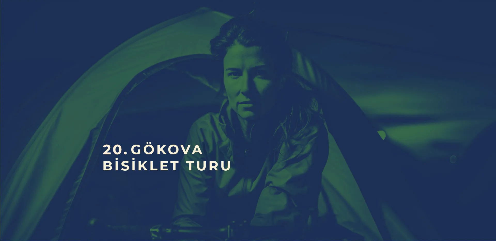
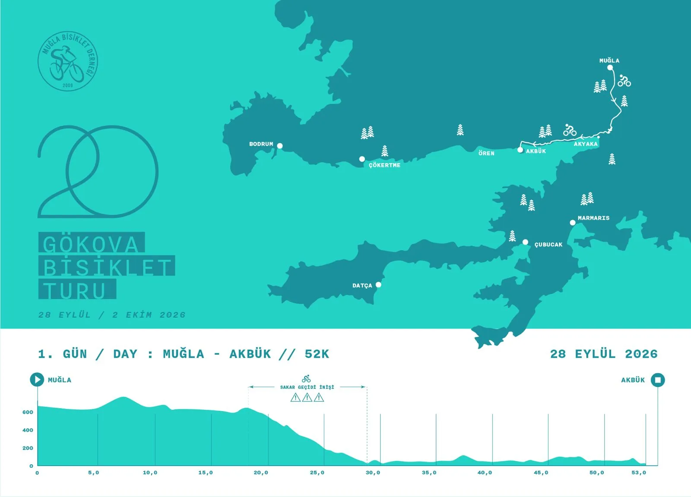
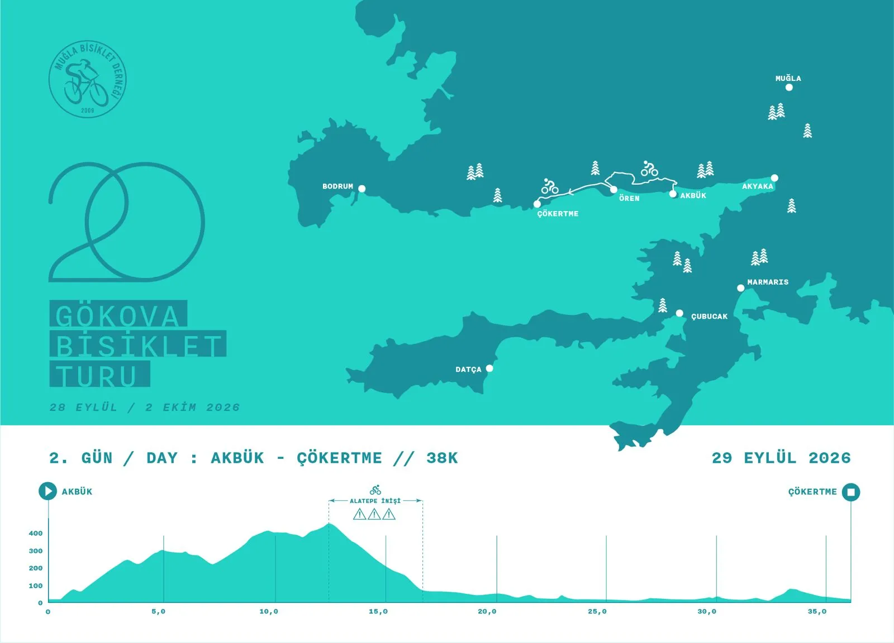
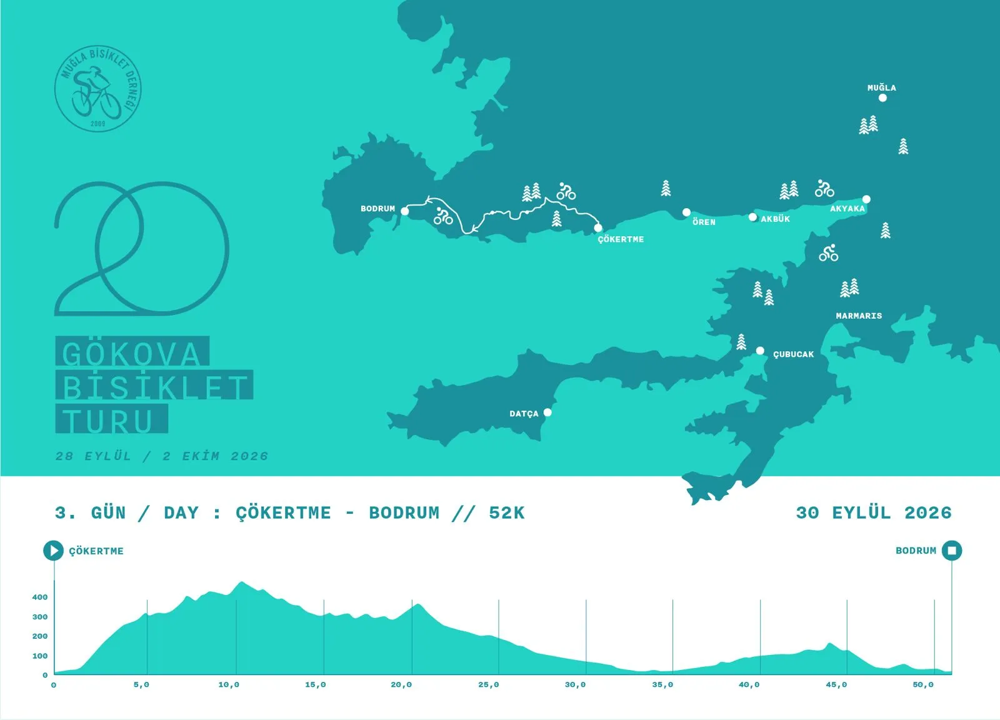
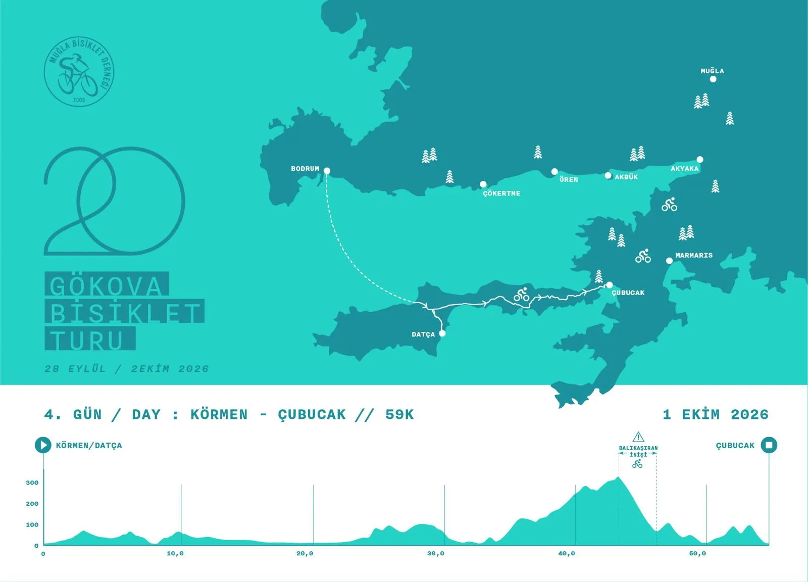
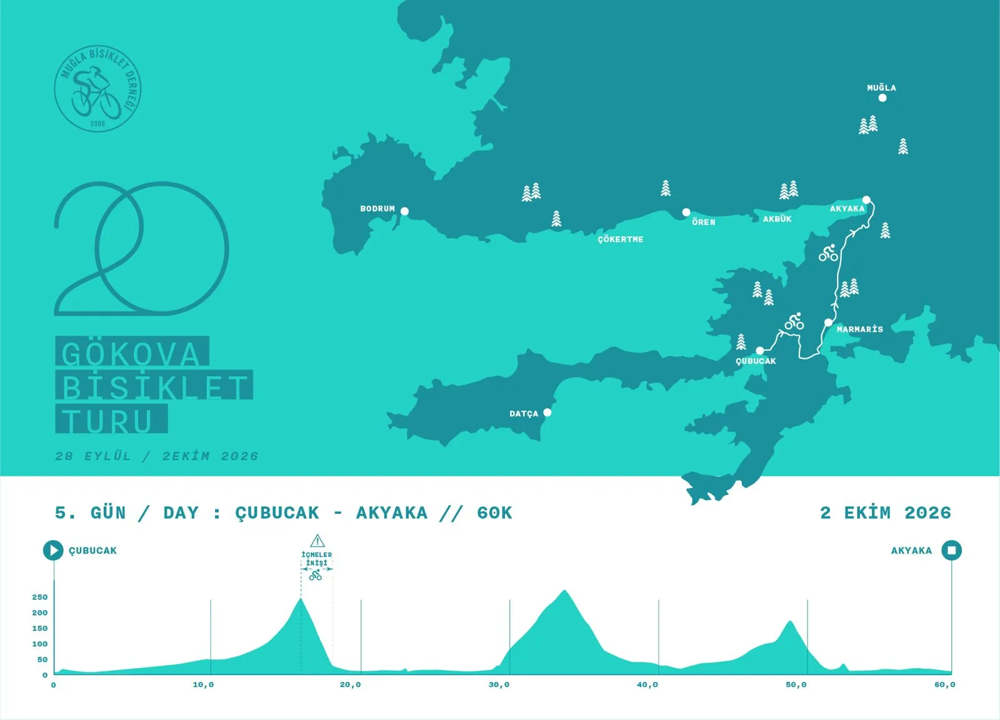

ROTALAR
Her sabah yola çıkmadan önce o güne ilişkin yol tarifini okumanızı öneririz. Tur süresince önemli sapaklarda organizasyon görevlileri olacak. Yolu bilmeyenlerin gruptan kopmaması yine de tavsiye edilir. Bunların hiç biri fayda etmedi, bir yerde kaldınız, arkanızdan gelen yok; o zaman İLETİŞİM sekmesindeki numaralardan organizasyon komitesi üyelerini aramaya başlayın. Bu numaralardan hiç değilse birini adres defterinize kaydetmek de iyi bir hazırlık sayılır.





28 EYLÜL / 1. GÜN
09.00 Konakaltı İskender Alper Kültür Merkezinde kahvaltı ardından Muğla Büyük Şehir Belediye Başkanı Sn. Ahmet Aras’ın açılış konuşması, Menteşe Belediye Başkanı Sn. Gonca Köksal’ın Açılış konuşması, bisikletçilerin Muğla merkez korteji.Muğla Cumhuriyet Meydanına sürüş, Kız Meslek Lisesi sola dönüş, Hasan Ali Yücel Cad. Üzerinden
Aylin Karaca Kavşağına sürüş, Muğla Sakar Akyaka yolu. Gülağzı Petrol toplanma. Sakar Akyaka arası toplu sürüş ve varış, Akyaka orman kampı öğle yemeğinin ardından sahil yolundan Akbük e varış 1. Gün sonu.
29 EYLÜL / 2. GÜN
08.00 Akbük koyu Altaş Tesisleri kahvaltı. 09.00 Ören istikametine doğru bisikletçilerin hareket etmesi 13.00 Ören Pazar yeri Öğle yemeği, 14.30 hareket, sahil yolundan 16.30. Çökertme Kaptan İbrahim tesislerine varış. Kamp Konaklama 2. gün sonu.
30 EYLÜL / 3. GÜN
08.00 Çökertme Kaptan İbrahim tesislerinde Kahvaltı,09.00 Mazı istikameti Çocuk Mezarlığı mevkiinden, Yalıçiftlik üzerinden Borum istikametine hareket, Yalıçiftlik belediye tesislerinde öğle yemeği molası Bodrum Ana yoluna bağlanış ve Gümlet Mah. Zetaş Kamp alanına varış Akşam yemeği ve konaklama,3.gün sonu.
01 EKİM / 4. GÜN
Sabah Borum Gümbet Zetaş Kamping Kamp alanında kahvaltı 09:00 hareket Bodrum Antik Kentte bisikletçilerin bisikletlerini bırakarak karşıya geçmesi ve Antik Kentte Hatıra fotoğrafı çektirmesi Yarım saatlik Molanın ardından Bodrum limandan feribot seferi ile Datça Körmen Limanı Feribot ile varış ardından Öğle yemeği Datça Marmaris ana yolu üzerinden sürüş, akşam 18.00 Marmaris Çabucak kampına varış. 4. Gün sonu.
02 EKİM / FİNAL
Sabah Çubucak Kamp yerinde 08.00 Sabah kahvaltısı 09.00 hareket, Datça Marmaris yolu Asparan mevkii, İçmeler istikameti bisiklet yolu bağlantısıyla Marmaris merkez,ardından Marmaris Macera Parkında öğle yemeği molası ve Marmaris Akyaka yolu üzerinden Akyaka
merkez Otoparkında turun sonlanması ve Muğla Büyükşehir Belediyesi otobüsleri Araçları ile ring sistemi İle bisikletçilerin turun başladığı yer olan kışla parkına taşınması. Turun Muğla Kışla Parkında 02.10.2026 Tarihinde sonlanması.5. gün sonu.